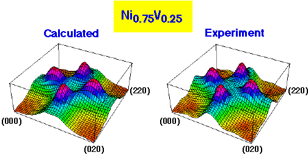

First-Principles Prediction of Short-Range Order in Alloys

Solid state alloys at high temperatures often undergo a phase transition to a disordered arrangement of the constituent atoms. The arrangement is not random, however, but may exhibit some degree of short-range order, i.e., the excess probability of finding certain pairs of atoms relative to random statistics. For the first time, ``state-of-the-art'' first-principles calculations including the effects of atomic displacements have been extended to high temperatures, and the resulting short-range order predicted. The short-range order has been predicted for a variety of transition metal and semiconductor alloys. The excess pair probabilities associated with short-range order are also a physically measurable effect, and we have compared our parameter-free calculations with experimental measurements, finding excellent agreement. Our calculations have led to an increased understanding of ordering properties in these alloys.Many transition metal alloy systems are currently being considered as a new class of materials for high-temperature applications. In many cases these applications have been limited to date, however, oftentimes due to a lack of fundamental understanding of the materials properties. Also, in many semiconductor alloys, the degree or extent of ordering is not even known experimentally. The current theoretical calculations demonstrate that ordering processes in alloys may be understood and even predicted (without reference to any experiment) on a fundamental, microscopic level. The theoretical predictions are shown to be highly accurate by comparing with experimental measurements for transition metal alloys, for which an abundance of experimental data exists. These calculational tools are not specific to transition metals, however, thus opening the door to calculations of ordering in the highly technologically important semiconductor alloys, where there exists very little or no experimental data.
Back to
Solid State Theory Home Page
This site created and maintained by Chris Wolverton
(cmw@sst.nrel.gov)
Last updated: January 9, 1998